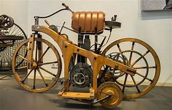

ORIGEN DE MOTOS
Las motos nacieron en 1885, cuando Gottlieb Daimler y Wilhelm Maybach crearon la primera con motor de combustión. En 1903, Harley-Davidson empezó a fabricarlas en masa. En los años 50-70, las marcas japonesas Honda, Yamaha, Suzuki y Kawasaki revolucionaron el mercado. Hoy en día, hay motos eléctricas y de alta tecnología. 🏍️
